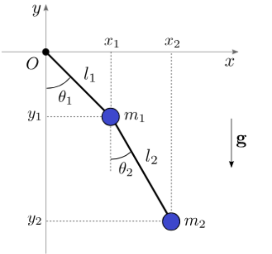
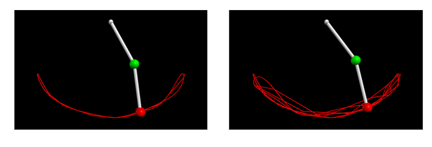
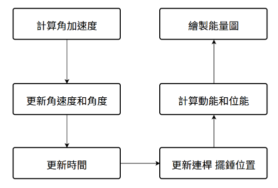
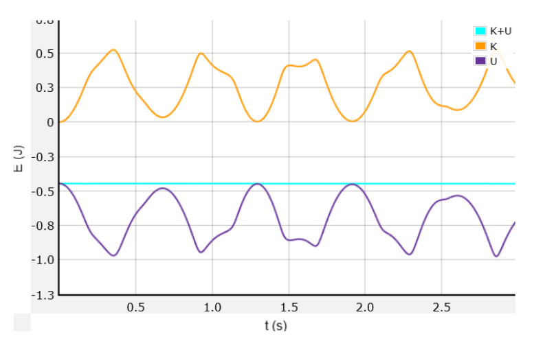

物理模擬-雙擺
物理系統的原理分析
雙擺系統由兩個相連的擺組成，每個擺的運動是由重力、拉力及連桿的相互作用力決定。其運動特點是高度非線性的，且會遵守力學能守恆。
變數分析

- 質量：\( m_1 \), \( m_2 \)
- 懸臂長度：\( l_1 \), \( l_2 \)
- 重力加速度：\( g \)
- 質點位置（以極坐標表示）：
- 第一擺質點位置 \( (x_1, y_1) \)：
\[ x_1 = l_1 \sin(\theta_1), \quad y_1 = -l_1 \cos(\theta_1) \]
- 第二擺質點位置 \( (x_2, y_2) \)：
\[ x_2 = l_1 \sin(\theta_1) + l_2 \sin(\theta_2) \]
\[ y_2 = -l_1 \cos(\theta_1) - l_2 \cos(\theta_2) \]
公式推導
1. 速度分析
第一個擺錘的速度（對時間求導）：
\[ \dot{x}_1 = l_1 \dot{\theta}_1 \cos(\theta_1) \]
\[ \dot{y}_1 = l_1 \dot{\theta}_1 \sin(\theta_1) \]
第二個擺錘的速度：
\[ \dot{x}_2 = l_1 \dot{\theta}_1 \cos(\theta_1) + l_2 \dot{\theta}_2 \cos(\theta_2) \]
\[ \dot{y}_2 = l_1 \dot{\theta}_1 \sin(\theta_1) + l_2 \dot{\theta}_2 \sin(\theta_2) \]
2. 動能計算
第一擺動能
\[ T_1 = \frac{1}{2} m_1 (\dot{x}_1^2 + \dot{y}_1^2) = \frac{1}{2} m_1 l_1^2 \dot{\theta}_1^2 \]
第二擺動能
\[ T_2 = \frac{1}{2} m_2 (\dot{x}_2^2 + \dot{y}_2^2) \]
\[ = \frac{1}{2} m_2 (l_1^2 \dot{\theta}_1^2 + l_2^2 \dot{\theta}_2^2 + 2l_1 l_2 \dot{\theta}_1 \dot{\theta}_2 \cos(\theta_1 - \theta_2)) \]
3. 總動能
\[ T = T_1 + T_2 \]
\[ = \frac{1}{2} m_1 l_1^2 \dot{\theta}_1^2 + \frac{1}{2} m_2 (l_1^2 \dot{\theta}_1^2 + l_2^2 \dot{\theta}_2^2 + 2l_1 l_2 \dot{\theta}_1 \dot{\theta}_2 \cos(\theta_1 - \theta_2)) \]
4. 位能計算
\[ V_1 = m_1 g y_1 = -m_1 g l_1 \cos(\theta_1) \]
\[ V_2 = m_2 g y_2 = -m_2 g (l_1 \cos(\theta_1) + l_2 \cos(\theta_2)) \]
5. 總位能
\[ V = V_1 + V_2 = -(m_1 + m_2)g l_1 \cos(\theta_1) - m_2 g l_2 \cos(\theta_2) \]
6. 拉格朗日量
拉格朗日量：
\[ L = T - V \]
\[
L = \left[ \frac{1}{2} m_1 l_1^2 \omega_1^2 + \frac{1}{2} m_2 \left( l_1^2 \omega_1^2 + l_2^2 \omega_2^2 + 2l_1 l_2 \omega_1 \omega_2 \cos(\theta_1 - \theta_2) \right) \right]
\]
\[
- \left[ m_1 g l_1 \cos(\theta_1) + m_2 g \left( l_1 \cos(\theta_1) + l_2 \cos(\theta_2) \right) \right]
\]
7. 運動方程
拉格朗日方程：
\[ \frac{d}{dt} \left( \frac{\partial L}{\partial \dot{\theta}_i} \right) - \frac{\partial L}{\partial \theta_i} = 0 \]
擺錘 1 的運動方程：
\[ (m_1 + m_2) l_1^2 \alpha_1 + m_2 l_1 l_2 \alpha_2 = -(m_1 + m_2) g l_1 \sin(\theta_1) - m_2 l_1 l_2 \omega_2^2 \sin(\theta_1 - \theta_2) \]
擺錘 2 的運動方程：
\[ m_2 l_2^2 \alpha_2 + m_2 l_1 l_2 \alpha_1 = -m_2 g l_2 \sin(\theta_2) + m_2 l_1 l_2 \omega_1^2 \sin(\theta_1 - \theta_2) \]
8. 角加速度
\[
aa_1 = \frac{- (m_1 + m_2) g l_1 \sin(a_1) - m_2 l_1 l_2 \omega_2^2 \sin(a_1 - a_2) - \frac{m_2 l_1 l_2 \cos(a_1 - a_2) \cdot aa_2}{(m_1 + m_2) l_1^2}}
{(m_1 + m_2) l_1^2}
\]
\[
aa_2 = \frac{-m_2 l_1 l_2 aa_1 - m_2 g l_2 \sin(a_2) + m_2 l_1 l_2 \omega_1^2 \sin(a_1 - a_2)}
{m_2 l_2^2}
\]
9. 角速度
\[
w_1(t + \Delta t) = w_1(t) + aa_1 \Delta t
\]
\[
w_2(t + \Delta t) = w_2(t) + aa_2 \Delta t
\]
模擬畫面

流程圖

模擬動畫
比較理論與模擬的結果
理論：遵守力學能守恆
實際：總能量幾乎不變（如淺藍線）

資料來源